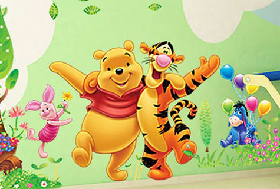

笑话理解之Pooh
A little girl walks in to the living room one Sunday morning while her Dad is reading the paper. "Where does poo come from?" she asks. The father feeling a little perturbed that his 5 year old daughter is already asking difficult questions thinks for a moment and says, "Well you know we just ate breakfast?" "Yes," answers the girl. "Well the food goes into our tummies and our bodies take out all the good stuff, and then whatever is left over comes out of our butts when we go to the toilet, and that is poo." The little girl looks shocked, and stares at him in stunned silence for a few seconds before asking: "And Tigger?"
pooh 是儿童用语 粪便 的意思,而 Whinnie The Pooh 是Disney出的一部卡通片:小熊维尼
